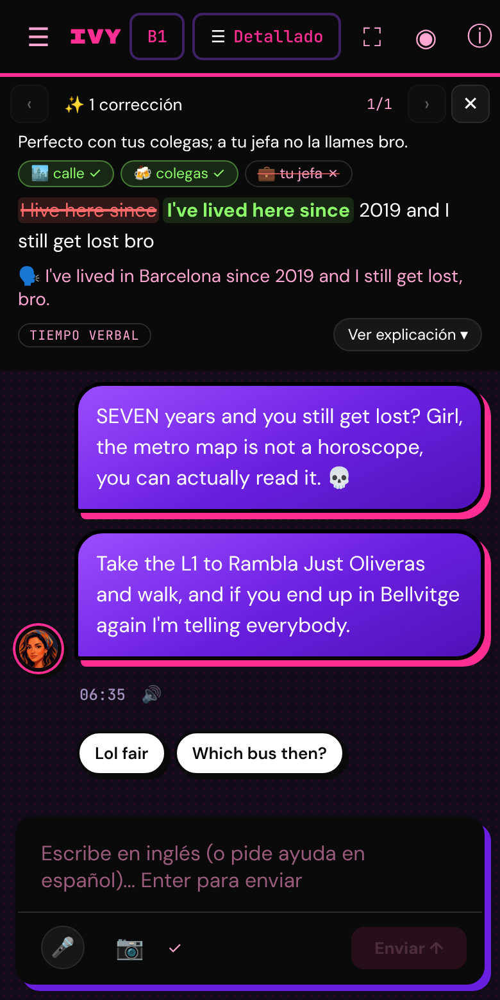
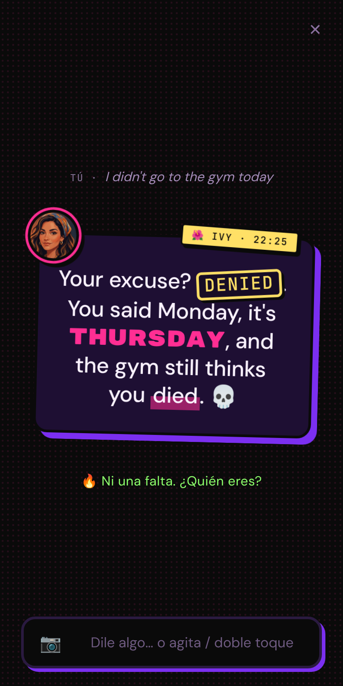
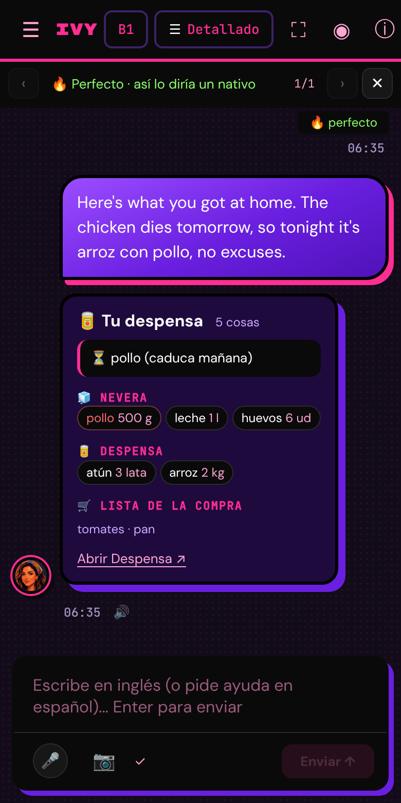
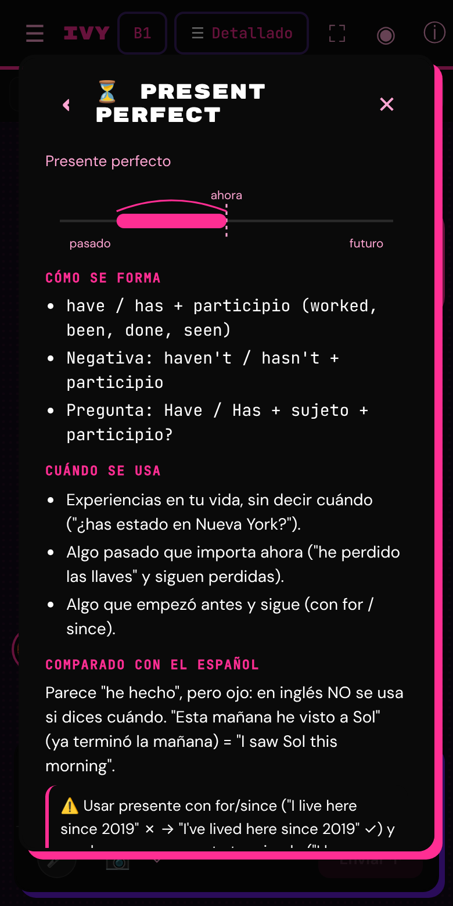

Inglés de la calle.
Y la que te lleva la vida.Street English.
And she runs your life.
Ivy es una profe con muchísima personalidad que corrige todo lo que escribes, te enseña a hablar como un nativo de verdad y, de paso, te apunta lo que compras, lo que gastas, a quién le debes un mensaje y qué tienes mañana. Funciona dentro de Claude, en tu móvil.
Ivy is a tutor with a huge personality who corrects everything you write, teaches you to talk like a real native and, on the side, keeps track of what you buy, what you spend, who you owe a message and what's on tomorrow. It runs inside Claude, on your phone.
Solo necesitas una cuenta de Claude, también la gratuita. Ivy se instala en tu cuenta: así se hace.
All you need is a Claude account, free ones included. Ivy installs in your account: here's how.

Qué hace
What she does
Una profe y una asistente en el mismo chat. Le cuentas tu día en inglés como te salga; ella te corrige, te contesta como una amiga del barrio y apunta lo que haga falta.
A tutor and an assistant in the same chat. Tell her about your day in whatever English you've got; she corrects you, answers like a friend from the block and writes down whatever needs writing.



Instalar Ivy, paso a paso
Install Ivy, step by step
Ivy se instala en tu propia cuenta de Claude, también la gratuita: todo lo tuyo se queda en tu cuenta y en tu Drive. Unos 5 minutos, desde el móvil o el ordenador.
Ivy installs in your own Claude account, free ones included: everything of yours stays in your account and your Drive. About 5 minutes, from your phone or a computer.
- Ten una cuenta de ClaudeGet a Claude accountEn claude.ai. Vale la cuenta gratuita; con un plan de pago Ivy aguanta más mensajes al día. Ivy usa tu plan, sin pagar nada más.At claude.ai. A free account works; on a paid plan Ivy lasts for more messages a day. Ivy uses your plan, nothing else to pay.
- Conecta tus cosasConnect your stuffEn claude.ai → Ajustes → Conectores: Google Drive (despensa, dinero, tu gente), Google Calendar (agenda y avisos) y Gmail (correos; solo envía cuando tú tocas Enviar). Si buscas trabajo, también Indeed.In claude.ai → Settings → Connectors: Google Drive (pantry, money, your people), Google Calendar (agenda and reminders) and Gmail (email; only sends when you tap Send). Job hunting? Add Indeed too.
- Descarga IvyDownload Ivyivy-boy-bye.zip. Dentro vienen las cuatro apps y la guía
INSTALAR.md. Se puede hacer todo desde el móvil.ivy-boy-bye.zip. Inside are the four apps and theINSTALAR.mdguide. You can do it all from your phone. - Pídele a Claude que la instaleAsk Claude to install itAbre una conversación nueva en Claude, adjunta el zip y pega el mensaje que viene en
INSTALAR.md. Claude publica las cuatro apps en tu cuenta y te da los enlaces. También vale con Claude Code.Open a new conversation in Claude, attach the zip and paste the message fromINSTALAR.md. Claude publishes the four apps in your account and gives you the links. Claude Code works too. - Abre Ivy y acepta los permisosOpen Ivy and allow the permissionsLa primera vez te pregunta si puede usar Claude (para hablar contigo), Drive, Calendar y Gmail. Puedes cambiarlo luego en el menú Permisos.The first time it asks to use Claude (to talk to you), Drive, Calendar and Gmail. You can change this later in the Permissions menu.
- Ponla en tu móvilPut it on your phoneAbre el enlace de Ivy en el navegador del móvil, con tu cuenta de Claude, y guárdala en la pantalla de inicio:Open Ivy's link in your phone's browser, signed in to Claude, and save it to your home screen:
iPhoneEn Safari: botón Compartir (cuadrado con flecha) → Añadir a pantalla de inicio → Añadir.In Safari: Share button (square with arrow) → Add to Home Screen → Add.AndroidEn Chrome: menú ⋮ → Añadir a pantalla de inicio (o "Instalar") → Añadir.In Chrome: ⋮ menu → Add to Home screen (or "Install") → Add.
- EscríbeleText herEn inglés, como te salga. Cuéntale tu día, pregúntale cómo se dice algo, dile lo que compraste. Ella hace el resto.In English, however it comes out. Tell her about your day, ask how to say something, tell her what you bought. She does the rest.
Personajes
Characters
Ivy es la original y no cambia. Pero puedes crear otros personajes con la misma profe por dentro: los describes ("una profe jubilada de Sevilla, dulce pero sin pelos en la lengua") y Claude los diseña con su nombre, su vida, su forma de hablar y sus frases. Se guardan en tu Google Drive y cambias de uno a otro desde el menú 🎭.
Ivy is the original and never changes. But you can create other characters with the same tutor inside: describe them ("a retired teacher from Seville, sweet but blunt") and Claude designs their name, life, voice and catchphrases. They're saved in your Google Drive and you switch from the 🎭 menu.
Para empresas: tu propia copia
For companies: your own copy
Todo el producto está en un repositorio listo para clonar: las cuatro apps, sus permisos, la guía y un archivo de contexto para que Claude Code lo entienda entero. Montas tu propia Ivy en tu cuenta y creas tus personajes.
The whole product lives in one ready-to-clone repository: the four apps, their permissions, the guide and a context file so Claude Code understands all of it. Set up your own Ivy in your account and create your own characters.
- Consigue el repositorioGet the repositoryEs privado y propietario: pide acceso al propietario.It's private and proprietary: ask the owner for access.
- Prepara los archivosBuild the files
npm install && npm --prefix circle install npm run test:all npm run release # release/: 4 HTML + permisos
- Publica con Claude CodePublish with Claude CodeAbre Claude Code con el repositorio y pídele que publique los cuatro HTML de
release/con los permisos dedeploy/permisos/. La guía completa está endocs/INSTALAR.md.Open Claude Code on the repository and ask it to publish the four HTML files inrelease/with the permissions indeploy/permisos/. The full guide isdocs/INSTALAR.md. - Hazla tuyaMake it yoursPon las URLs de tus artifacts en
src/links.js, crea tus personajes desde el menú 🎭 y compártela con tu gente.Put your artifact URLs insrc/links.js, create your characters from the 🎭 menu and share it with your people.
Preguntas
Questions
¿Cuánto cuesta?How much does it cost?
Nada aparte: Ivy usa tu plan de Claude, también el gratuito. Con un plan de pago aguanta más mensajes al día. Sin suscripciones ni pagos por mensaje.
Nothing extra: Ivy uses your Claude plan, free ones included. A paid plan lasts for more messages a day. No subscriptions, no per-message fees.
¿Dónde están mis datos?Where is my data?
El chat y tu progreso, en tu cuenta de Claude. La despensa, el dinero, tu gente y tus personajes, en tu Google Drive. Nadie más los ve.
Your chat and progress live in your Claude account. Pantry, money, people and characters live in your Google Drive. Nobody else sees them.
¿Cómo la actualizo?How do I update it?
Descarga el archivo otra vez y pídele a Claude Code que publique los HTML nuevos sobre tus artifacts de siempre, con sus enlaces (si crea artifacts nuevos, el chat se queda en el viejo). Tu chat, tu progreso y tus datos se conservan.
Download the file again and ask Claude Code to publish the new HTML files over your existing artifacts, using their links (new artifacts would leave your chat behind in the old one). Your chat, progress and data are kept.
¿Funciona sin Claude?Does it work without Claude?
No. Ivy vive dentro de Claude y habla con Claude por ti.
No. Ivy lives inside Claude and talks to Claude for you.
¿iPhone y Android?iPhone and Android?
Los dos, desde el navegador o la app de Claude. La guardas en la pantalla de inicio y se abre como una app.
Both, from the browser or the Claude app. Save it to your home screen and it opens like an app.
¿Envía correos o borra cosas sola?Does she send emails or delete things on her own?
Sola nunca envía un correo: te propone la respuesta en "📝 Por responder" y solo sale si tú la revisas y tocas Enviar. Todo lo que apunta tiene botón de deshacer, y para borrar te pide que confirmes.
She never sends email on her own: she proposes the reply in "📝 Por responder" and it only goes out when you review it and tap Send. Everything she writes down has an undo button, and deleting always asks you to confirm.
Es muy malhablada, ¿se puede suavizar?She swears a lot, can I tone it down?
Sí: el interruptor "Sin filtro" baja los tacos. O crea un personaje con otro carácter.
Yes: the "Unfiltered" switch tones the swearing down. Or create a character with a different temper.